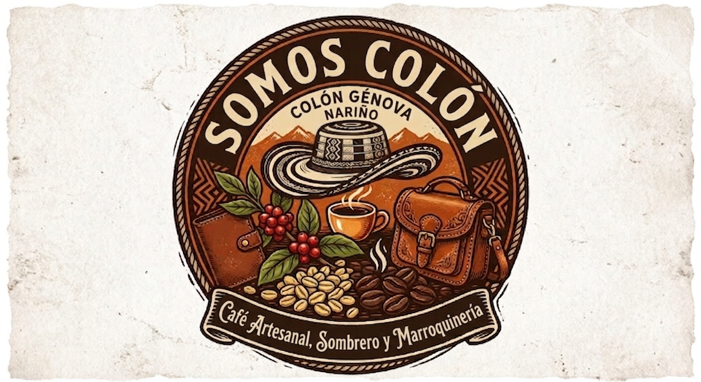
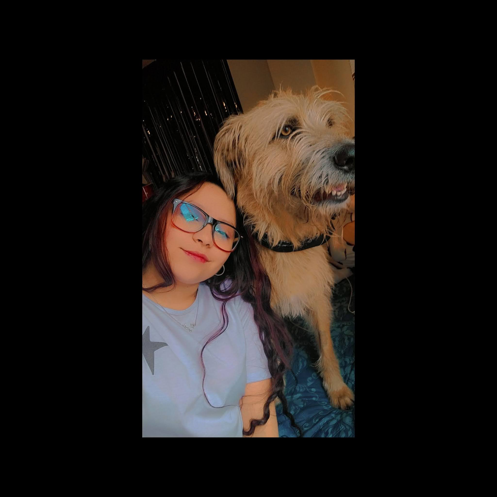

Somos Colón es un catálogo digital pensado para dar visibilidad a los productos artesanales de Colón Génova, Nariño. La plataforma permite explorar y conocer la oferta local de café artesanal, sombrero y marroquinería, conectando la identidad cultural de la región con una experiencia web clara, visual y fácil de navegar. El proyecto busca apoyar el emprendimiento regional mediante un espacio digital donde los productos se presentan con su origen, categoría y detalle, facilitando el descubrimiento del trabajo artesanal de la comunidad.
